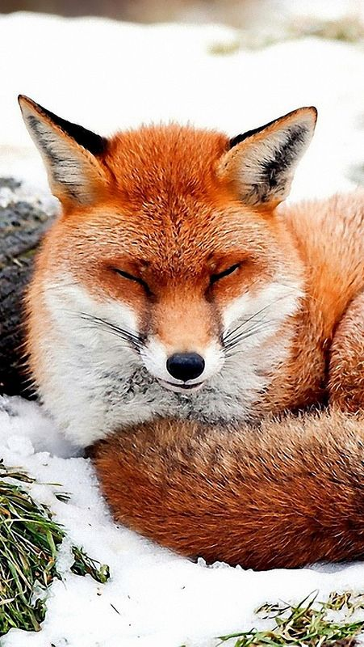

หมา (Canis lupus familiaris) เป็นสัตว์เลี้ยงลูกด้วยนมที่ถูกเลี้ยงเป็นสัตว์เลี้ยงคู่ครัวเรือนมาอย่างยาวนานกว่า 15,000 ปี มนุษย์คัดเลือกสายพันธุ์หมาให้มีความหลากหลายทั้งในด้านรูปร่าง ขนาด และพฤติกรรม ตั้งแต่ชิวาว่าที่ตัวเล็กเพียงไม่กี่ปอนด์ไปจนถึงเกรทเดนที่สูงใหญ่ หมามีประสาทรับกลิ่นดีเยี่ยมกว่ามนุษย์ถึง 10,000 เท่า จึงถูกฝึกให้ทำงานในหลากหลายบทบาท ไม่ว่าจะเป็นหมานำทางผู้พิการทางสายตา หมา K9 ที่ใช้ในภารกิจตำรวจและทหาร หมากู้ภัยที่ค้นหาผู้รอดชีวิตจากซากปรักหักพัง หรือหมาเลี้ยงแกะที่ช่วยต้อนปศุสัตว์ นอกจากนี้หมาหลายสายพันธุ์ยังมีบทบาทเป็นหมา�บำบัด (Therapy Dog) ช่วยฟื้นฟูสภาพจิตใจของผู้ป่วยในโรงพยาบาลอีกด้วย หมาจัดเป็นสัตว์สังคมที่ซื่อสัตย์และจงรักภักดีต่อเจ้าของ มีสติปัญญาเทียบเท่าเด็กอายุ 2-2.5 ปี สามารถเรียนรู้คำศัพท์ได้มากถึง 250 คำ